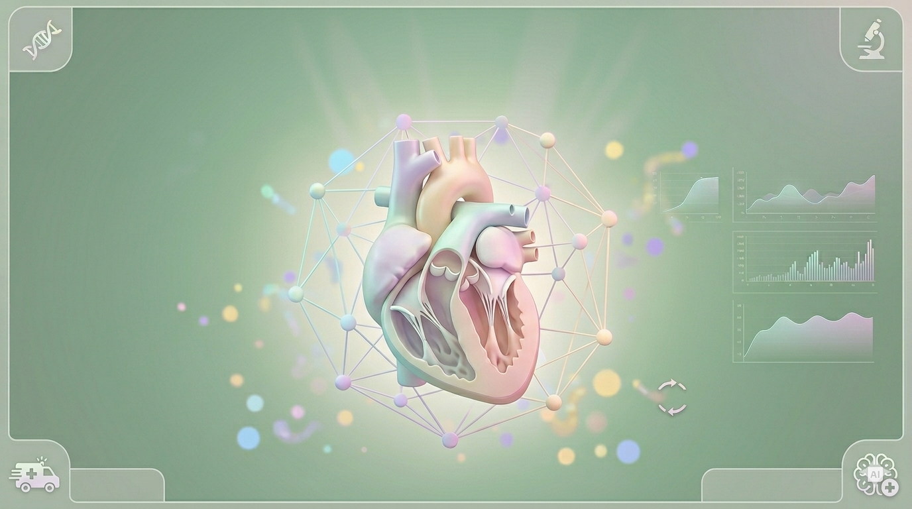
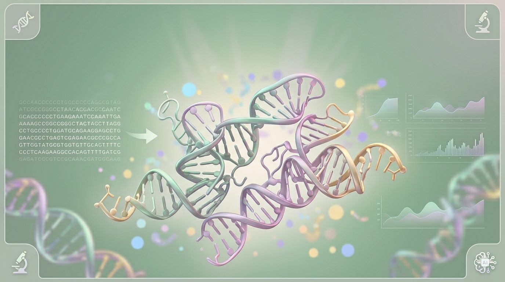
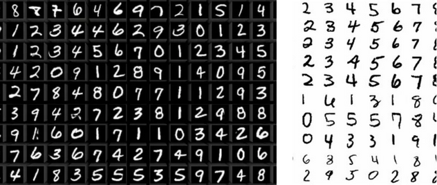
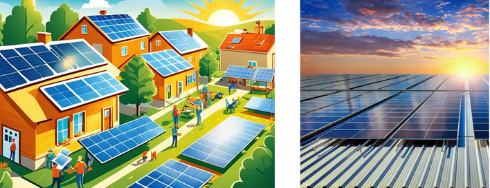
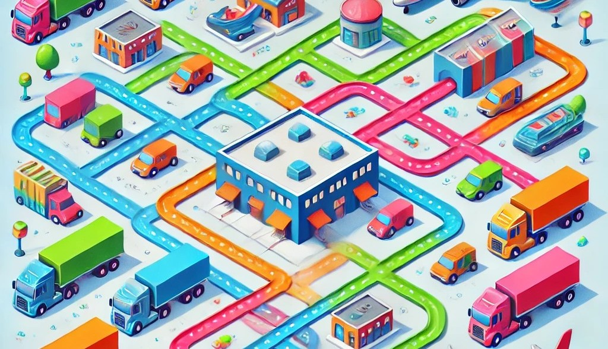

Data Scientist · AI Researcher
Mechanical engineer turned AI practitioner. I build production-ready systems at the intersection of NLP, generative models, and computer vision — currently as a Data Scientist at Tesco. MS AI from NTU Singapore.
In 2019 I set out to become a mechanical engineer — then programming stole my heart. What started as curiosity about code became a full pivot into AI, driven by the belief that the most interesting engineering problems today sit at the intersection of mathematics, computation, and real-world data.
I completed my Master's in Artificial Intelligence at Nanyang Technological University in Singapore (2023–24), where my thesis explored how large language models can power next-generation recommendation systems. Before that, I spent six months at Amazon India as a Business Research Analyst, bridging data analysis with business strategy.
Today I'm a Data Scientist at Tesco, working on ML systems that operate at retail scale. Outside of work you'll find me reading, cooking something experimental, chasing an adrenaline rush, or dancing.
MoE text classification: Implemented a Mixture of Experts architecture for hierarchical text classification — 97% accuracy on noisy datasets, cutting misclassification by 17% vs manual classification. Graph personalization engine: Built a graph-based personalization engine using multi-relational customer trajectory modelling, projected to surface £45M in incremental revenue in 2026. Fraud detection pipeline: Led end-to-end design and deployment of a fraud detection automation pipeline, achieving 80% reduction in manual case review.s
NLP ML Deployment PythonFocused on NLP, generative models, and recommendation systems. Thesis: Next Point-of-Interest Recommendation using Large Language Models — combining GETNext with LLM-generated semantic embeddings for personalised POI prediction.
Research LLMs SingaporeConducted data-driven research to surface insights supporting business strategy. Collaborated cross-functionally to translate analytical findings into actionable recommendations.
Analytics Business ResearchEngineering fundamentals shaped how I think about systems, constraints, and optimisation — skills that transferred naturally to machine learning. Published two IEEE papers during this period.
IEEE Publications × 2 Research
Full RL environment simulating national organ allocation decisions, calibrated to real NHS Blood and Transplant 2022/23 data. An LLM agent acts as transplant coordinator — enforcing blood compatibility, HLA typing, cold ischaemia limits, and clinical urgency across 15 UK transplant centres. LLaMA-3.3-70b scores 0.917 mean vs 0.539 GPT-4o-mini baseline. Supports GRPO fine-tuning via TRL.
View on GitHub
Predicted RNA 3D structure from sequence using Template-Based Modelling (TBM) combined with NVIDIA's RNAPro — a 500M-parameter diffusion model built on AlphaFold 3's architecture with a RNA-specific template embedder and RibonanzaNet2 as a frozen sequence encoder. Achieved public leaderboard score of 0.489 (vs 0.554 oracle baseline), with detailed ablations documenting that template quality is the single most critical pipeline variable.
View on GitHub
Used GANs to bridge the domain gap between labelled source datasets and unlabelled target domains — enabling models trained on synthetic data to generalise to real-world scenarios without costly target-domain annotations.
View on GitHub
Benchmarked SVM and LSTM architectures for solar irradiance prediction at specific geographic coordinates using NASA POWER historical data. Compared model accuracy across latitudinal and longitudinal positions.
Read on IEEE
Tackled the NP-hard closed-path multi-depot travelling salesman problem with a genetic algorithm (elitist selection, 2-opt mutation, OX crossover), further refined using reinforcement learning to converge on feasible, optimised solutions.
Read on IEEELet's build something interesting together.
Open to data science roles, research collaborations, and interesting conversations about AI. Based in Bengaluru — open to remote & relocation.
Send a message ↗